Note :
Our product comes with an American standard adapter, but we will include a European standard adapter in the package.
Whether you are using American or European standard adapters in your country, you can place an order and use it with confidence!
Global version. Supported languages: English by Default (Simplified Chinese, Traditional Chinese, English, French, Thai language, Spanish, Korean, Japanese, German, Hebrew, Russian, language, Portuguese, Arabic)
Specifications
CPU：Intel Alder-N Lake N95 up to 3.4GHz
GPU：Intel® UHD Graphics, (up to 750MHz)
RAM：LPDDR5 8GB
Storage：M.2 2242 SSD 256GB
WiFi：AC7265/2.4G/5G,WiFi5 802.11 ac/a/b/g/n
Bluetooth：BT 4.2
Graphics output：With dual HDMI output, supports a maximum resolution of 4096x2160
Power interface: DC IN (5.5/2.5mm), 12V/3A
，USB3.2*2 USB2.0*2
Video output:HDMI * 2 4096x2160 @ 60Hz
Audio interface:Å3.5mm, CTIA
Ethernet port: RJ45 port, 1000M/100M/10M
Body size: 72*72*44.5mm
Operating system: Windows 11
Product packaging includes：
1 * Mini PC
1 * US standard charger
1 * US to EU Power adapter
1*HDMI Cable
1*Manual
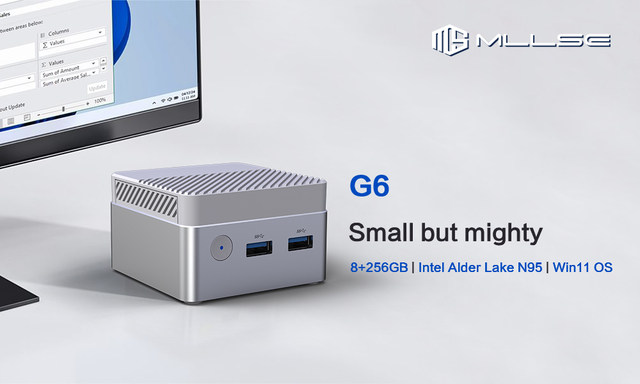
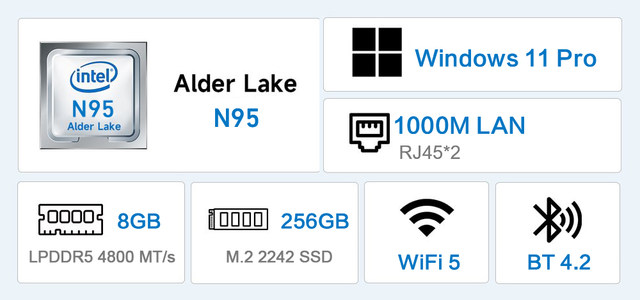
Powerful internal"corefurther performance enhancement
Equipped with intel N95 processor with up to 3.40 GHZQuad Core Quad Thread, 10nm process technologyDelivering greater productivity and a more enjoyableentertainment experience
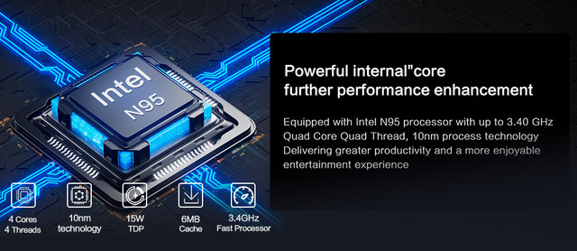
Quickly Turn On The Device
Equipped with rich storage expansion, it can quickly respond toarge work documents, audio and video, and more.
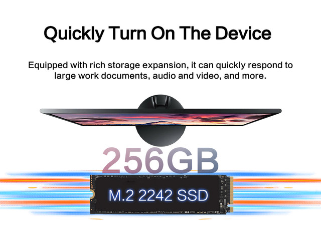
LPDDR5 4800 MTIS
Providing you with one more choice and one more guarantee, coupled with M.2solid-state drives,reading,storing, and compressingfiles are more efficient, and multitasking switching is smoother
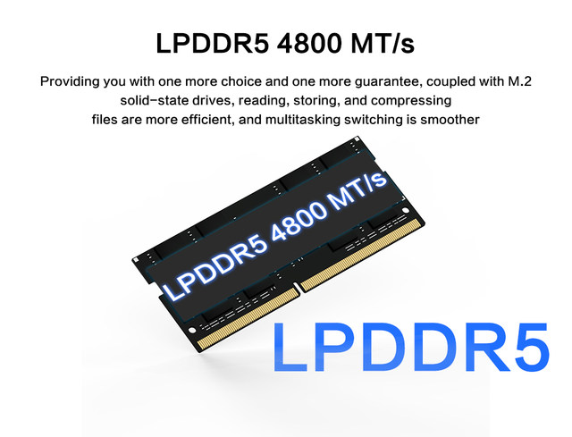
Wireless & Wired Connection
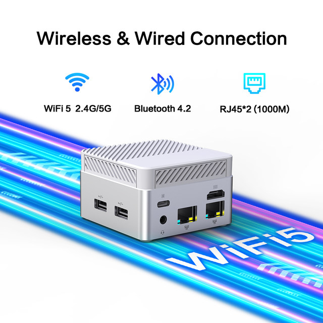
4K output
Through HDMl output, it supports a maximum resolution of 4096x2160;Four USB ports are available for both work and entertainment,3.5mm audio interface, more convenient and secure.
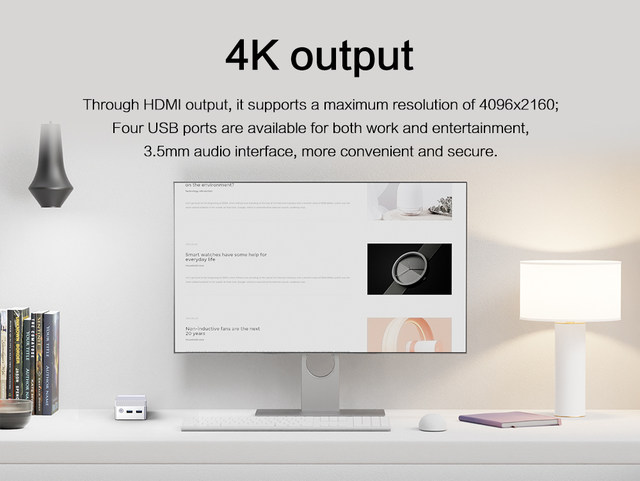
Compact copperturbine heat dissipation design
The compact body adopts a superconducting copper turbine cooling design,with a fully three-dimensional surrounding air inlet. lt is quieter and cooler, withintelligent fan control and dust-proof design, extending the lifespan of the device.
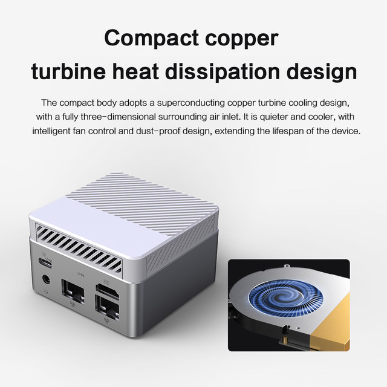
Small, but very powerful
Compact body/can be placed anywhere: compact in size, easy to carry; The volume isonly 1/40 of a traditional desktop computer; The weight is only 1/40 of a regular desktopcomputer, Company, home, all you need is a monitor, a small bag, take everything with
you at any time!
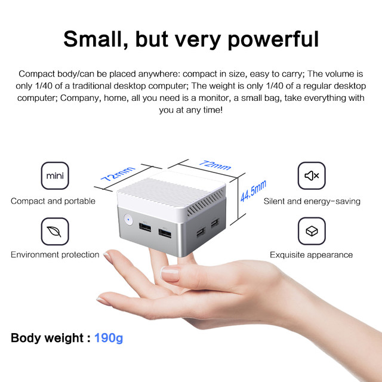
Rich multifunctional interfaces
For Office, Business, Home and Gaming Use
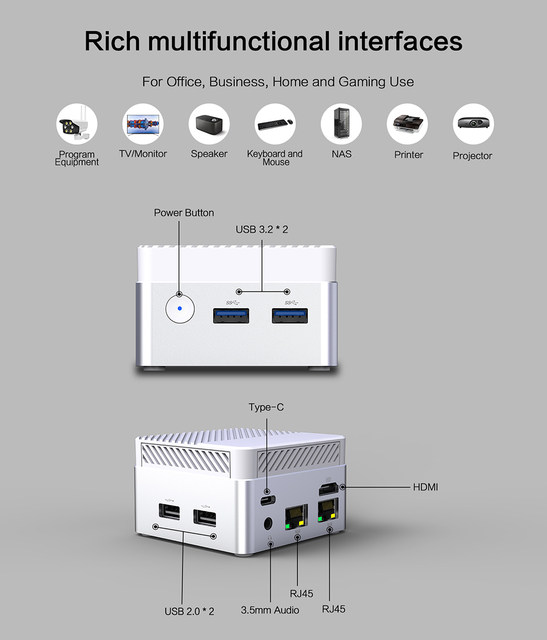
Windows 11Professional is designedfor hybrid work.
It offers efficient productivity by leveraging Microsoft Teams2 forsmarter collaboration. IT consistency, application compatibility, andcloud management can simplify adoption processes. lt is a secure operating system that supports zero-trust security mode, ensuring dataand access security anytime, anywhere.
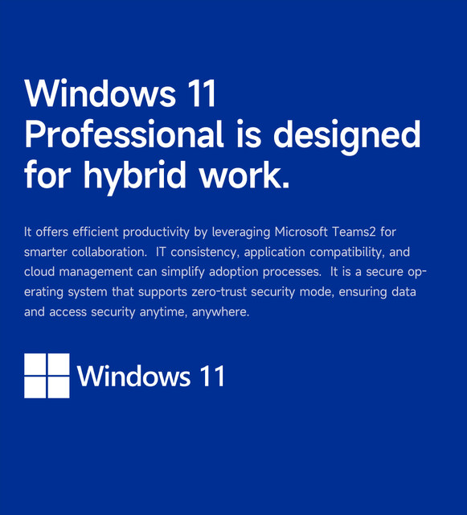
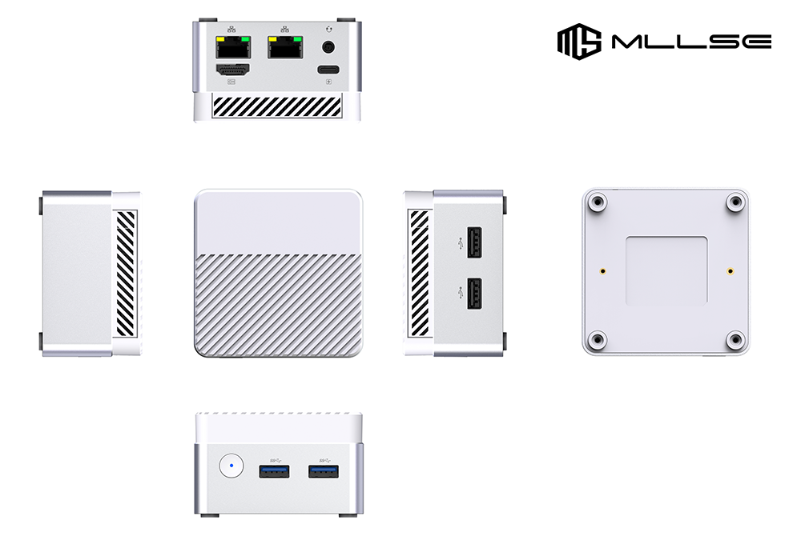